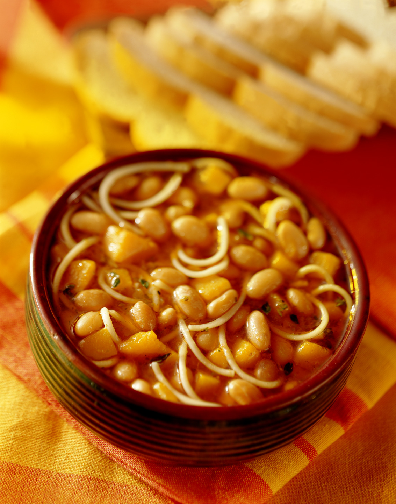

Porotos con rienda // Chilean beans with noodles

Ingredients
- 2½cup of pre-watered beans
- 1 ½ liters of hot water
- ½ kg of peeled and minced pumpkin
- 1 stock sausage-flavored cube
- ½ an onion finely minced
- 2 tbsp. of oil
- 2 garlic cloves
- 1 tbsp. of Paprika
- ½ tbsp. of ground oregano
- ½ tbsp. of cumin
- 1/4 of a packet hand-halved noodles
Instructions
- Place the beans and squash in a saucepan with 1 ½ liters of hot water and the crumbled sausage stock cube.
Cook over high heat for 25 to 30 minutes or until well cooked.
- Meanwhile, heat a frying pan with the oil indicated and add the onion and garlic, sauté for a few minutes until
slightly softened. Season with the paprika and oregano, cook again for a few minutes.
- Add this sauce to the pot with the beans and add the noodles, cook for approximately 8 to 10 minutes until
the noodles are completely cooked and the preparation is slightly thickened. Once ready, serve whenever you like./li>
And ready to serve!